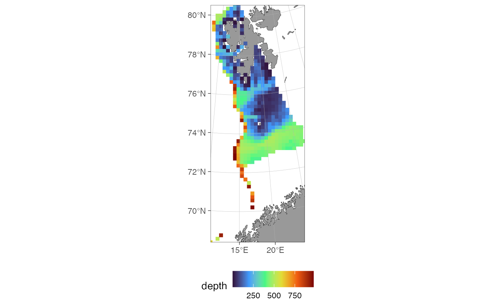
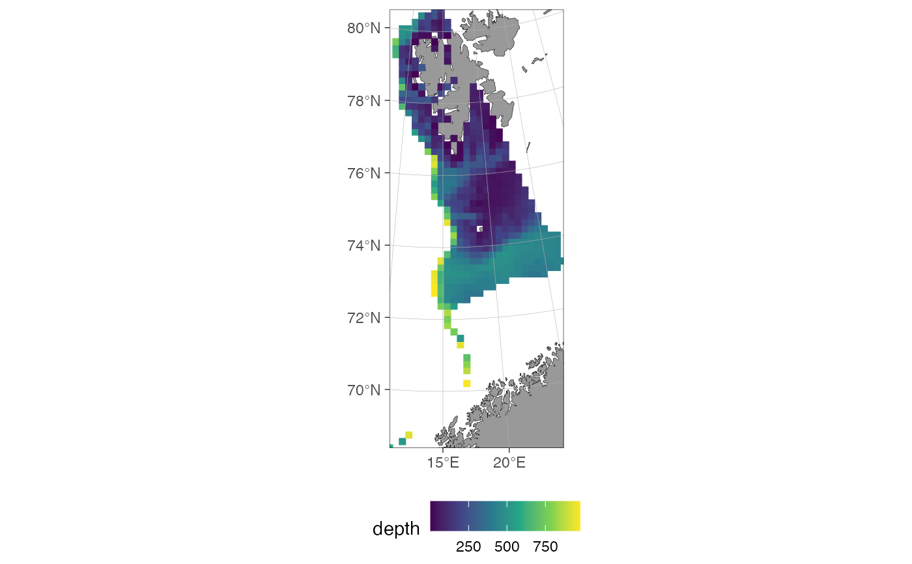

Draws the points of a make_prediction_grid() grid as filled squares on a
ggOceanMaps::basemap(), approximating the actual grid cells. Optionally
colours the squares by a column (depth by default, when present).
Arguments
- x
A data frame from
make_prediction_grid()(classsdmTMB_prediction_grid).- value
Character. Column in
xused to colour the points, e.g."depth"(the default). IfNULL, or not a column ofx, points are drawn in a singlecolor.- crs
Coordinate reference system. If
NULL(default), taken from thecrsattribute set bymake_prediction_grid().- xy_cols
Character vector of the coordinate columns. Default
c("X", "Y").- coord_multiplier
Numeric factor to convert coordinates to CRS units. If
NULL(default), taken from thecoord_multiplierattribute set bymake_prediction_grid()(falling back to1000).- point_size
Numeric size of the grid-cell squares. If
NULL(default), scaled from theresolutionattribute set bymake_prediction_grid()(0.08 * resolution, falling back to1if unavailable) so squares roughly approximate the actual cell size.- palette
Character.
viridispalette used when colouring byvalue, passed tooptioninggplot2::scale_color_viridis_c(). Default"turbo".- color
Character. Point colour used when not colouring by
value. Default"red".- base_size
Numeric. Base font size. Default
11.
Examples
# \donttest{
data(sebastes)
eggan <- subset(sebastes, cruiseseries == "EggaN")
region <- make_survey_prediction_region(eggan, crs = 32633, concavity = 5)
grid <- make_prediction_grid(region, resolution = 20, max_depth = 1000)
plot(grid)

plot(grid, palette = "viridis")

# }